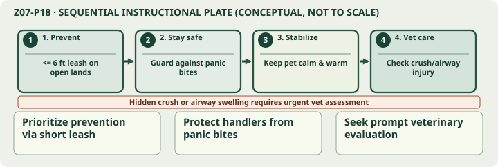

Z07-P18 · Traps and snares · New manuscript
Veterinary Emergency Planning and Restraining-Stress Risks for Pets
Prepare pet owners for immediate safety priorities and veterinary follow-up rather than improvising risky field mechanics.
When it applies · Emergency readiness for dog owners traveling near rural multi-use lands.
Equipment · Saved 24-hour emergency vet numbers, sturdy leash/muzzle awareness, basic pet first-aid kit.

Actions
- Treat short-leash prevention on open multi-use lands as the primary lifesaving measure because high-force devices act faster than unprepared owners can respond.[L10]
- Recognize that even gentle dogs in sudden pain or panic frequently bite owners during stressful incidents; protect hands/face, stay calm, and call for immediate assistance if an incident occurs.[L10, M06]
- Seek immediate veterinary evaluation for any pet that suffers even a brief restraining or cable encounter because internal bruising, tendon damage, swelling, or airway injury can worsen after release.[L10]
Failure recognition · Assuming a limping dog is fine after a brief mechanical pinch overlooks hidden crush trauma, ischemia, or soft-tissue infection.[L10]
Verify · Emergency vet contact info is stored offline before rural outings, and short-leash prevention stays enforced.[L10]
Stop or change course · Stop and seek emergency veterinary care immediately after any pet encounter with a mechanical capture device, wire, or distressed wildlife.[L10]
Evidence and editorial notes
- L10 · Minnesota DNR · Minnesota Trapping Regulations and Fur Harvest Rules (Current web edition)
- Section: Human and pet hazard recognition around lawful trapping areas · Conditions: Walking dogs or hiking in open public-use lands during furbearer seasons
Support: Keep dogs on short leashes on open multi-use lands during autumn/winter trapping seasons, avoid bait piles and shoreline culverts, and carry vet contact info.
Limitations: Body-gripping and cable devices present rapid fatal risk to unleashed pets; prevention via leashing is far safer than emergency release. · Conflicting evidence: None noted.
Editorial note: Core Z07 bystander & pet hazard prevention. · Specialist reviewer: Veterinary and outdoor-safety reviewer
Primary source · checked 2026-11-25 - M06 · NIH / MedlinePlus · Wounds and Injuries (current web edition)
- Section: Minor Wound Cleaning, Protection, and Infection Red Flags · Conditions: Superficial cuts, scrapes, and abrasions with potable water available
Support: Rinse minor wounds thoroughly with clean potable water, cover with a clean sterile dressing, and monitor for worsening redness, warmth, swelling, pus, red streaks, or fever.
Limitations: Deep punctures, animal bites, retained foreign bodies, or heavily contaminated wounds require clinical evaluation and tetanus review. · Conflicting evidence: None; separates clean potable rinsing from harsh chemical wound scrubbing.
Editorial note: Anchors field wound hygiene and infection escalation cards. · Specialist reviewer: Wilderness medicine and wound care
Primary source · checked 2026-11-24
Source lineage · New manuscript (Z07 P18 pet safety) · Classification · New manuscript.